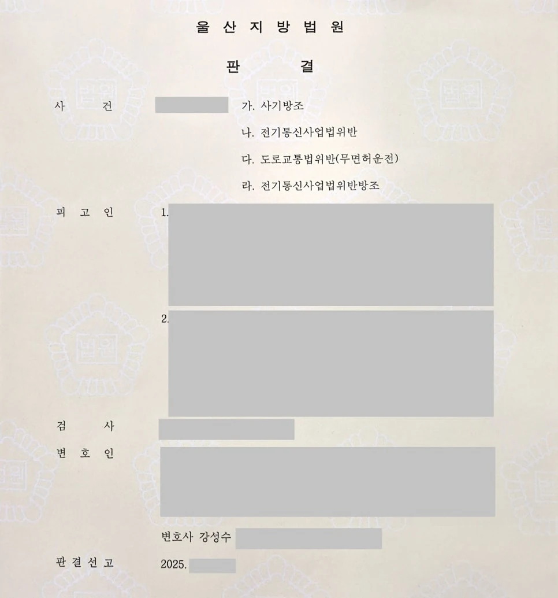

핵심 결과
대포폰이나 선불 유심을 넘기는 행위는 단순한 부탁으로 끝나지 않습니다.
불법 도박, 보이스피싱, 사기 범죄에 사용될 수 있기 때문에 법원은 매우 엄격하게 봅니다.
이번 사건은 지인의 부탁으로 유심폰을 구해 전달한 행위가 문제 되었습니다.
전기통신사업법위반 방조 혐의가 적용되었고, 의뢰인에게는 여러 전과도 있었습니다.
하지만 법무법인 우린은 의뢰인의 가담 정도가 제한적이었다는 점과 재범 방지 가능성을 정리했습니다.
최종 결과는 집행유예였습니다.
| 구분 | 내용 |
|---|---|
| 사건 분야 | 전기통신사업법위반 방조 |
| 문제 행위 | 선불 유심폰 제공, 대금 이체 관여 |
| 관련 범죄 | 불법 도박 사이트 이용 가능성 |
| 불리한 요소 | 대포폰 범죄의 사회적 해악, 다수 전과 |
| 주요 대응 | 가담 정도 경미성, 범행 구조상 위치, 재범 방지 자료 정리 |
| 최종 결과 | 집행유예 |
사건 개요
의뢰인은 지인으로부터 부탁을 받았습니다.
다른 사람 명의의 선불 유심폰을 구해달라는 내용이었습니다.
의뢰인은 별다른 문제의식 없이 유심폰을 구해 전달했고, 대금 이체에도 관여했습니다.
하지만 수사기관은 이를 단순한 부탁으로 보지 않았습니다.
불법 도박 등 범죄에 사용될 통신 수단을 제공한 것으로 보았습니다.
결국 의뢰인은 전기통신사업법위반 방조 혐의로 재판을 받게 되었습니다.
실형 위험이 컸던 이유
- 대포폰과 선불 유심은 보이스피싱, 불법 도박 등 범죄에 악용될 수 있습니다.
- 의뢰인은 유심폰 전달과 대금 이체에 관여했습니다.
- 의뢰인에게는 다수의 형사 전과가 있었습니다.
- 법원은 대포폰 관련 범죄를 사회적 해악이 큰 범죄로 봅니다.
- 단순히 “부탁을 들어준 것뿐”이라는 설명만으로는 방어가 어려웠습니다.
이런 사건은 초범이 아니면 실형 위험이 더 커질 수 있습니다.
대포폰 사건에서 재판부가 보는 것
대포폰 사건은 실제 이익을 얼마나 얻었는지만 보지 않습니다.
범죄에 사용될 통신 수단을 제공했다는 점 자체가 중요하게 평가됩니다.
| 판단 요소 | 의미 |
|---|---|
| 유심 제공 경위 | 누구의 부탁으로 어떻게 전달했는지 |
| 대금 관여 여부 | 이체나 전달 과정에 관여했는지 |
| 범죄 인식 정도 | 불법 사용 가능성을 알았는지 |
| 가담 정도 | 범죄 조직의 핵심인지, 일시적 관여인지 |
| 전과 및 재범 위험 | 다시 비슷한 범행을 할 가능성이 있는지 |
핵심은 “몰랐다”는 말이 아니라, 사건에서 의뢰인의 실제 역할을 객관적으로 줄여 설명하는 것입니다.
해결 전략
1. 가담 정도가 제한적이었다는 점을 정리했습니다
수사기록을 분석해 의뢰인이 범죄 조직의 중심에 있던 것이 아니라는 점을 확인했습니다.
의뢰인의 역할은 유심폰을 구해 전달한 일시적 관여에 가까웠습니다.
이 부분을 기록과 함께 정리해 재판부에 설명했습니다.
2. 불리한 전과를 정면으로 관리했습니다
전과가 있다는 사실은 숨길 수 없습니다.
중요한 것은 이번 사건에서 의뢰인의 역할과 재범 가능성을 구분하는 것입니다.
기존 전과 때문에 무조건 실형이 필요하다는 인상을 줄이지 않도록, 현재 생활 환경과 단절 의지를 자료로 정리했습니다.
3. 재범 방지 가능성을 자료로 보여주었습니다
대포폰 사건은 다시 유사한 범죄에 연루되지 않겠다는 구조가 중요합니다.
관련 지인과의 관계 정리, 생활 환경 변화, 가족의 감독 가능성, 반성자료를 준비했습니다.
재판부가 집행유예를 선택할 수 있는 근거를 만든 것입니다.
| 대응 항목 | 준비한 내용 |
|---|---|
| 기록 분석 | 유심폰 전달 경위와 실제 역할 정리 |
| 가담 정도 | 조직적·반복적 관여가 아니라는 점 설명 |
| 전과 관리 | 기존 전과와 이번 사건의 차이점 정리 |
| 재범 방지 | 관련 관계 단절, 생활 환경 변화, 가족 감독 자료 |
| 변론 방향 | 실형보다 집행유예로도 교정 가능하다는 점 강조 |
결과
재판부는 대포폰 관련 범죄의 위험성을 엄격하게 보았습니다.
의뢰인의 전과도 불리한 요소였습니다.
하지만 의뢰인의 실제 가담 정도, 반성 태도, 재범 방지 가능성이 함께 고려되었습니다.
그 결과 실형이 아닌 집행유예가 선고되었습니다.
최종 결과
전기통신사업법위반 방조와 대포폰 중개가 문제 된 사건에서 집행유예가 선고되었습니다.
의뢰인은 구속을 피하고 사회 안에서 다시 생활할 기회를 얻었습니다.
대포폰·유심 제공 사건에서 조심해야 할 점
“그냥 부탁받았다”는 말만으로는 부족합니다.
수사기관과 재판부는 대포폰이 어떤 범죄에 사용될 수 있었는지 봅니다.
특히 보이스피싱, 불법 도박, 사기 범죄와 연결될 가능성이 있으면 더 엄격하게 판단합니다.
따라서 초기부터 본인의 실제 역할, 인식 정도, 이익 여부, 재범 방지 계획을 정리해야 합니다.
결론
전기통신사업법위반 방조 사건은 가볍게 볼 수 없습니다.
단순히 유심 하나를 넘긴 것처럼 보여도, 실제 재판에서는 범죄 인프라를 제공한 것으로 평가될 수 있습니다.
하지만 사건에서의 실제 역할과 가담 정도를 정확히 정리하면 결과는 달라질 수 있습니다.
사무장·상담실장 없이 변호사가 직접 상담합니다
대포폰, 선불 유심, 보이스피싱 연루 사건은 초기 대응이 중요합니다.
법무법인 우린은 강성수 변호사가 직접 상담하고, 수사기록 분석부터 법리 구성, 재판 변론까지 직접 진행합니다.
“그냥 부탁받았다”는 말만으로는 부족합니다. 먼저 사건 기록과 본인의 실제 역할을 정확히 확인해야 합니다.
이 글은 일반적인 법률 정보 제공을 위한 자료이며, 개별 사건의 결과를 보장하지 않습니다. 구체적인 대응은 사실관계와 증거에 따라 달라질 수 있습니다.